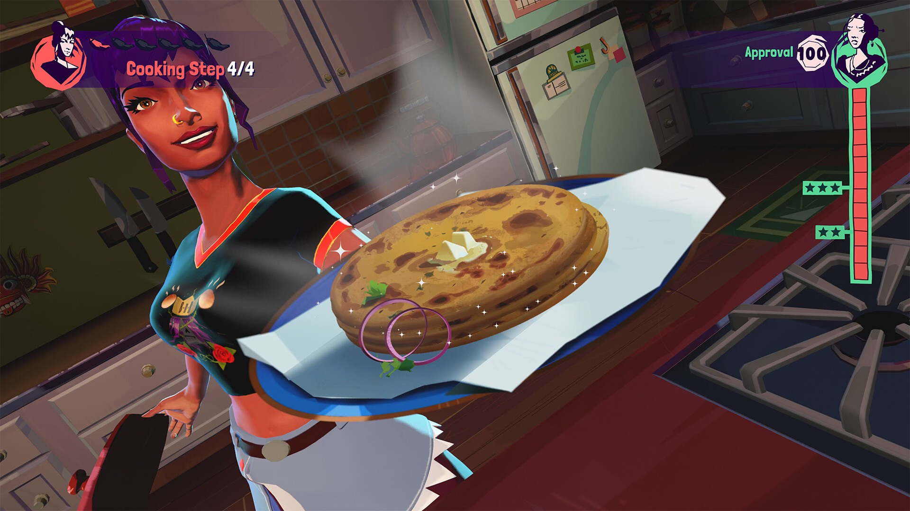
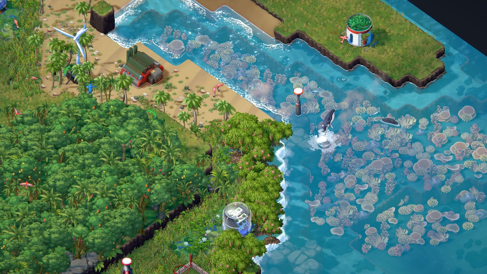

Back...
2023 Game of the Year
It's that time of the year again: Game of the Year season!
Ok, I'm kind of late with my hot takes this year, but being laid off in February threw a lot of things off-kilter. I actually thought that being unemployed would mean more time to catch up on my games backlog, but it really meant long hours on Discord commiserating with former co-workers, on the phone with the EI office and the bank, and on Zoom interviewing in a far less generous market than 2 years ago. (I'm happy to say that I signed an offer last week and will be employed again as of April.)
On to the games! Last year, I knew what my GOTY would be 15 minutes into playing it (Citizen Sleeper). This year, the choice was less obvious. There were a LOT of great games, but very few that I finished (I'm sorry BG3, I promise that I'll get back to you). It was tough narrowing down the list of candidates but, without further ado, my personal GOTY pick for 2023 is:
::: Thirsty Suitors :::

This game has so much personality and heart. The gameplay is nothing revolutionary (mostly turn-based battles and QuickTime events) but the writing is top notch and the story is compelling and meaningful. The art and animation styles are fantastic too, and communicate a lot of the game's humour. I continually found myself wanting to go back to and find out what happened next, which is rare when my growing backlog usually pushes me to move on to a new game. I also found myself hungry and hunting down kottu roti on UberEats for the second time this year. (It's a good year when I get to play TWO games about cooking South Asian food - shout out to Venba, a short but sweet game about the immigrant experience and cooking Tamil food!)
And a close runner-up:
::: Terra Nil :::
A pretty and relaxing sim-puzzle game. Not quite a city builder, more of a puzzler that asks you to manage limited resources and balance different biomes in a limited space. I really enjoyed this one and it's one of the few games of 2023 that I fully completed.

And because I played so many good games this year, here are some other quick recommendations:
- Hi-Fi Rush: I loved the aesthetics and sheer fun of this rhythm-action game. Another game that, like Thirsty Suitors, succeeds from leaning into an over-the-top style.
- Sea of Stars: Beautiful art meets retro RPG gameplay. I'm not particularly into JPRGs but I enjoyed this one more than I expected. The level of craft and polish that went into it is exceptional. If you're into old-school RPGs like Chrono Trigger, definitely take a look at this one.
- Chants of Sennar: A game about decoding languages? Yes please. If you're into adventure/puzzle games and/or linguistics, check this one out.
- Dordogne: Every year, there's at least one game that makes me cry. This is 2023's. Heartwarming game with beautiful watercolour-style art that'll make you miss your childhood and your grandmother.
- Piczle Lines 2: Into the Puzzleverse: I can't in good conscience leave this game off the list, because it likely has my most hours played of any 2023 game - I had it on my Switch and played a puzzle or two at bedtime for months until I'd unlocked everything. If you're looking for a Picross-esque puzzle game to kill some time, check this out.
Last but not least, I'll hand out a retrospective award (a.k.a. a pre-2023 game that I first played in 2023):
Dorfromantik (2022)
A rare game that I had to uninstall because I kept staying up till 3am playing it. Big "just one more turn..." energy. I just bought the board game version and I'm hoping that one is less life-consuming.
The full list:
Bold = completed / played at least 10 hours (if it's not a linear narrative game)
2023 releases:
- Hi-Fi Rush
- Luck be a Landlord
- A Space for the Unbound
- WW2 Rebuilder (demo)
- Pizza Tower
- Dredge
- The Murder of Sonic the Hedgehog
- Terra Nil
- Advance Wars 1+2: Reboot Camp
- Baldur's Gate 3
- Venba
- Misericorde vol 1
- Assassin's Creed Mirage
- The Pale Beyond (demo)
- Mortal Kombat 1
- Piczle Lines 2: Into the Puzzleverse
- Diablo 4
- Chants of Sennar
- Season Demo
- Thirsty Suitors
- Dordogne
- Urbo
- Jusant
- Against the Storm
- Jedi Survivor
- Sea of Stars
- Cobalt Core
Older:
- Diablo 2 Remaster (2000/2021)
- Jedi Fallen Order (2019)
- The Outer Worlds
- Detroit: Become Human (2018)
- State of Decay 2
- Kingdom New Lands
- Gears of War 5
- Yakuza: Like a Dragon
- Stacklands (2022)
- You Must Be 18 or Older to Enter (2017)
- Yakuza 0
- Dead Cells (2018)
- Please Fix the Road
- Dorfromantik (2022)
- NecroCity (demo)
- Mario + Rabbids: Sparks of Hope (2022)
- Card Shark (2022)
- Donkey Kong Country Tropical Freeze
- Paper Mario and the Origami King (2020)
- The Return of the Obra Dinn (2018)
- New Super Mario Bros U
Posted: March 2024